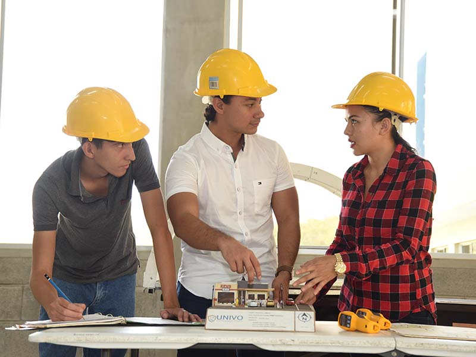
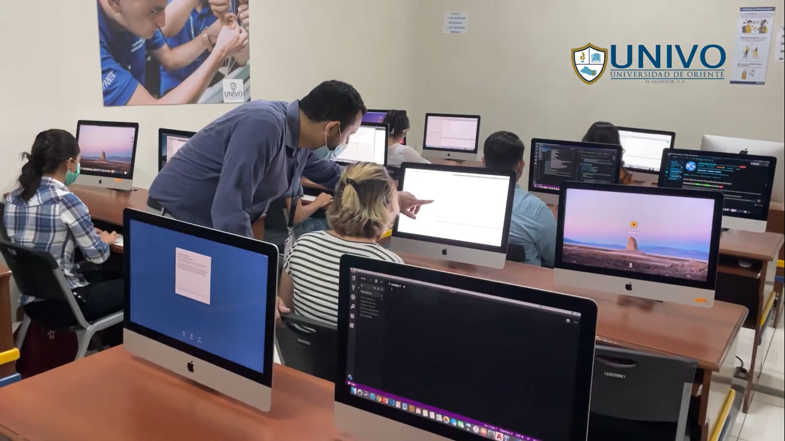
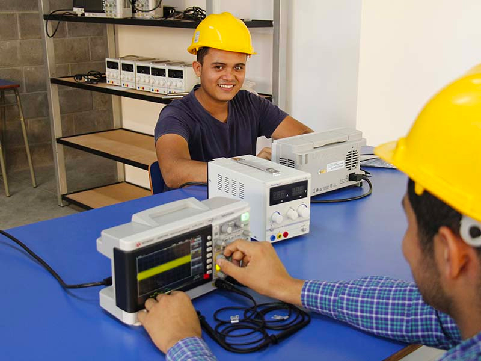

Arquitectura
Arquitectura es una disciplina que proporciona conocimientos técnicos y prácticos para el diseño, creación, renovación y restauración de espacios físicos donde el hombre desarrolla sus actividades, partiendo de soluciones simples a complejas, tales como, edificios y conjuntos urbanos. El profesional es formado en el cumplimiento de competencias que por medio de técnicas y con conocimiento para plasmar y solucionar los espacios habitables para el hombre, apoyado en la sensibilidad artística y expresión estética, involucrando aspectos como: urbanizador, constructor y diseñador de interiores, entre otros.
Ver proyectosIngeniería Civil

La Ingeniería Civil es una profesión que tiene como visión el desarrollo económico y social, por medio de la construcción de obras que aumenten la calidad de vida. Dentro de la carrera se realiza la construcción de infraestructura civil necesaria para generar desarrollo en el país, como es la construcción de carreteras, puentes, edificaciones, obras de protección y de mitigación de riesgos, obras de introducción de agua potable a las comunidades y de saneamiento por medio de la construcción de obras para el manejo de aguas residuales, de la mano de obras que aseguren la compensación ambiental necesaria para proteger el Medio Ambiente.
Ver proyectosIngeniería en Desarrollo de Software
Responde a necesidades de modernización y eficiencia de los procesos de las empresas. Supone a través de ella el incremento de la productividad y mejoramiento del estilo de vida de las personas que se forman en esta área, incluye temáticas como desarrollo de aplicaciones para dispositivos móviles, sistemas y sitios web, metodologías para el trabajo en equipo y competencias al nivel de la industria y garantía de la seguridad informática.
Ver proyectosIngeniería Industrial

OLa Ingeniería Industrial es una disciplina que se especializa en el entendimiento de los procesos, en desarrollar y aplicar métodos, técnicas y/o modelos que permitan controlar y administrar eficientemente los sistemas de producción de bienes y servicios, es decir, su campo de acción se orienta a hacer una utilización óptima de los recursos disponibles.
Ver proyectosIngeniería en Energía y Eficiencia Energética
La carrera de Ingeniería en Energía y Eficiencia Energética, nace con el propósito de crear profesionales que a través de sus conocimientos técnicos y científicos logren aportar desarrollo en el país y especialmente en la zona oriental; además de atender también las necesidades del sector eléctrico y electrónico nacional que cada vez demanda de profesionales enfocados a gestionar de manera eficiente la tecnología aplicada al sector Energético por medio de soluciones viables y que preserven el ecosistema. .
Ver proyectos